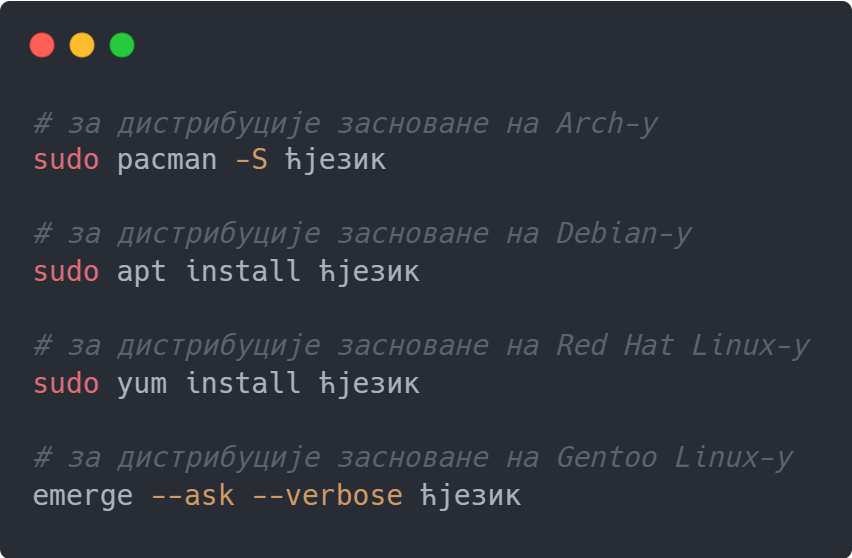
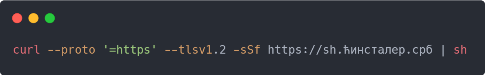

Уколико користите Windows оперативни систем најлакша опција јесте да преузмете ћинсталер користећи линк испод:
За Linux системе, у зависности од система за управљање пакетима, могуће је користити једну од следећих команди:
Инсталацију је могуће извршити и употребом команде curl:
За све проблеме и недоумице везано за инсталацију помоћ је могуће пронаћи на званичном форуму језика Ћ:
Инсталација описана изнад, користећи ћинсталер, јесте препоручени начин инсталације програмског језика Ћ. Међутим, Ћ може бити инсталиран и на друге начине, описане у линку испод: